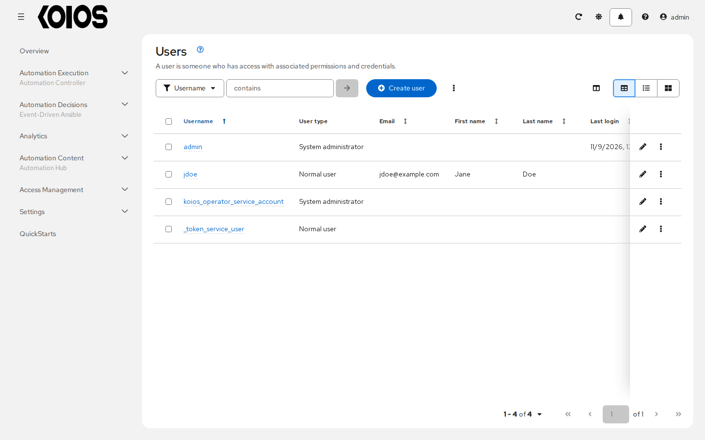
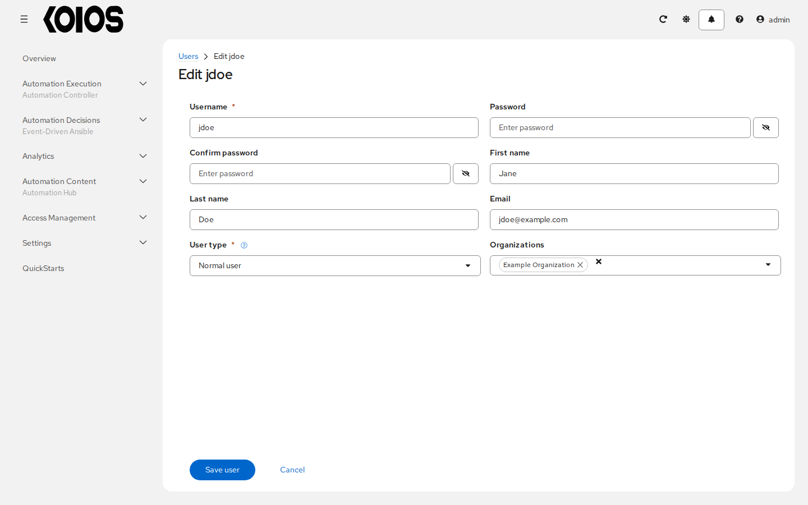
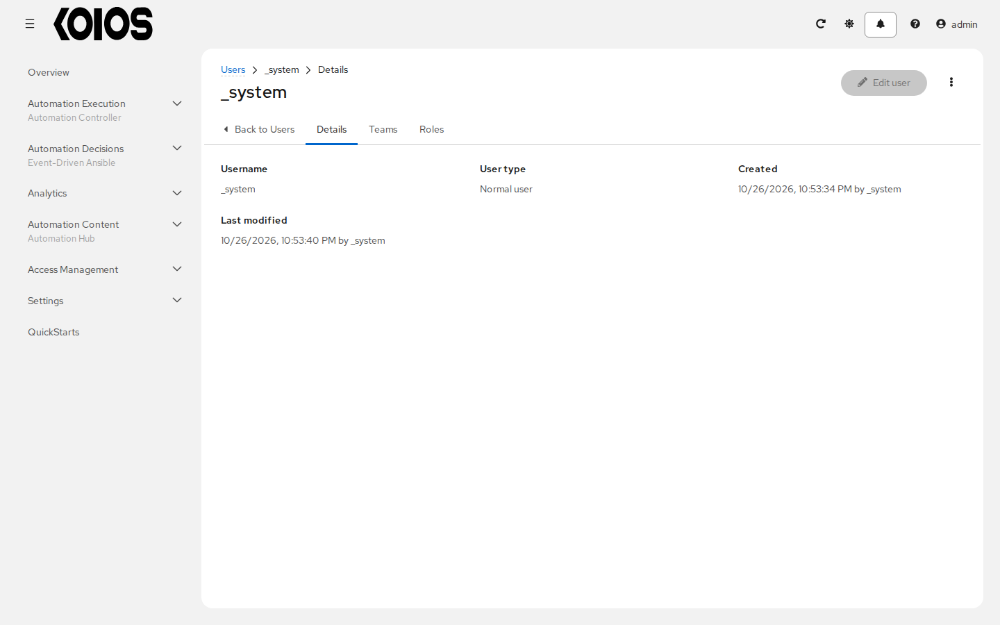
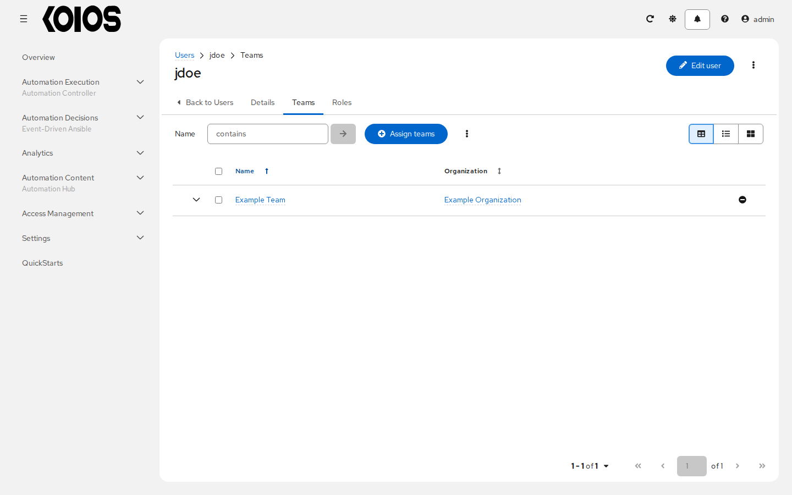
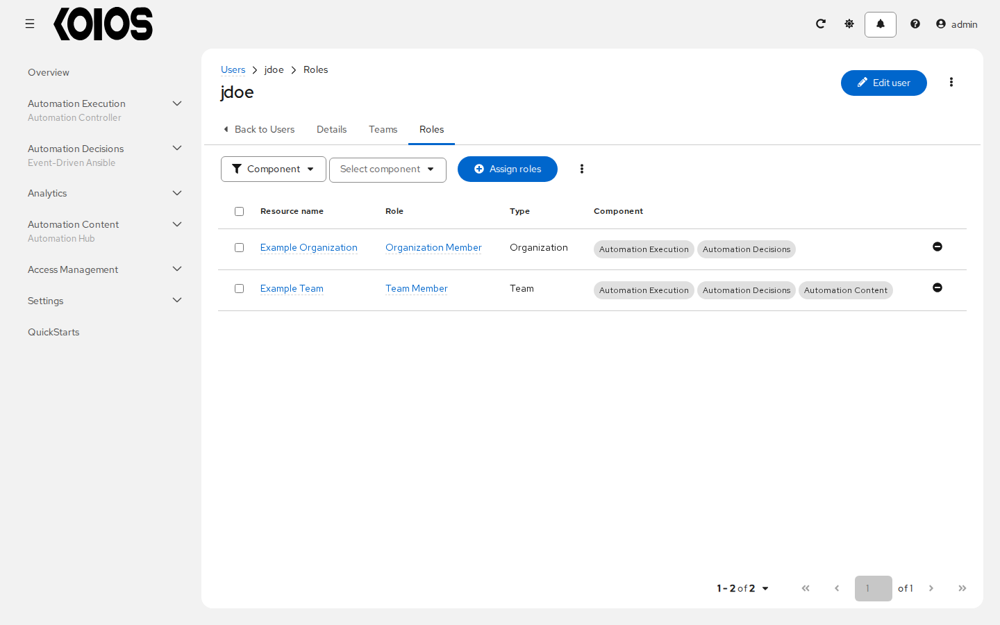
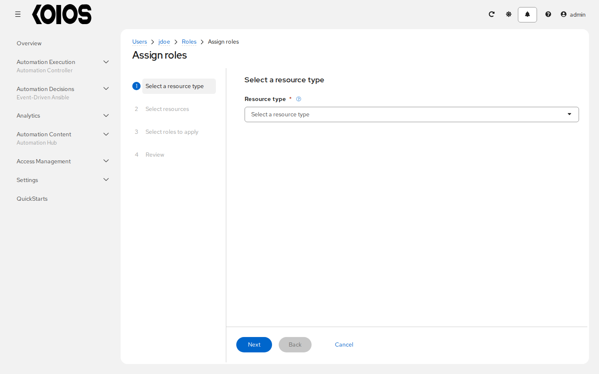

7. Users
A User is someone who has access to the platform, with the roles given to it and to its teams. Users belong to the platform and are shared by automation controller, Event-Driven Ansible and automation hub. Open Access Management > Users; the list can be searched and sorted.

The list shows the type of each user and when it last logged in.
7.1. Create a User
In Access Management > Users, click Create user.
Enter the Username, Password and Confirm password (required), and optionally the First name, Last name, Email and the Organizations of the user.
Choose the User type (required):
Normal user: has the access that its roles and teams give.
Koios Automation Platform Auditor: can see everything in the platform, without changing it (shown as Platform auditor in the list of users).
Koios Automation Platform Administrator: full access to the whole platform and its users (shown as System administrator in the list of users).
Click Create user. The user page opens on its Details tab; Edit user changes it.

The details of a user who has logged in show when they last did.

Users from an external provider (LDAP, SAML, OIDC and others) are created when they first log in; see Authentication methods.
7.2. Delete a User
Deleting a user removes its account from the platform. Its name and email are removed permanently.
In Access Management > Users, select the users to delete.
Open the menu next to Create user and click Delete users, then confirm.
Do not delete the service accounts of the platform, such as koios_operator_service_account.
7.3. Users - Teams
The Teams tab of a user lists the teams it belongs to. Team membership is managed from each team (see Teams).

7.4. Users - Roles
The Roles tab lists the roles of the user on resources of the platform, with the component each one applies to. Roles inherited from teams are listed in the team.

7.4.1. Assign roles
Click Assign roles. The wizard has four steps: Select a resource type, Select resources, Select roles to apply and Review.

Choose the resource type, select the resources, select the roles and click Next.
Review the assignment and click Finish.
To remove a role, use the remove button at the end of its row and confirm.
7.5. Users - Tokens
Tokens belong to the platform gateway and work for every service of the platform. Create and
revoke them in Access Management > API Tokens, or through /api/gateway/v1/tokens/; see
API tokens and OAuth applications. The page of a user shows an API Tokens tab only when the user is you:
it lists your own tokens.